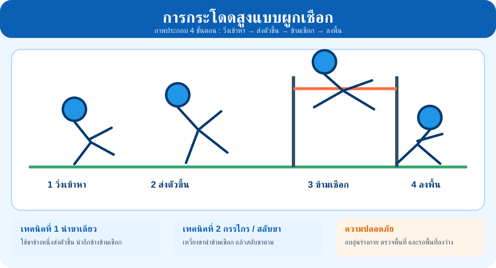
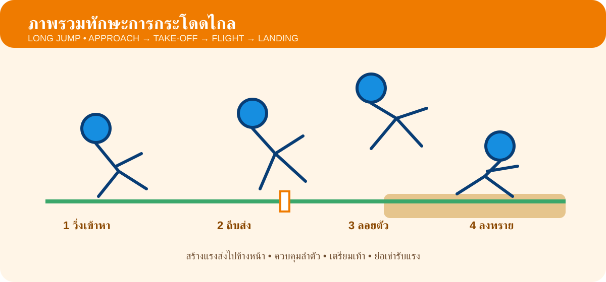
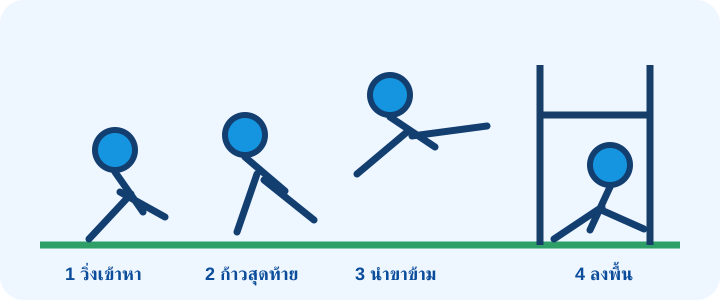
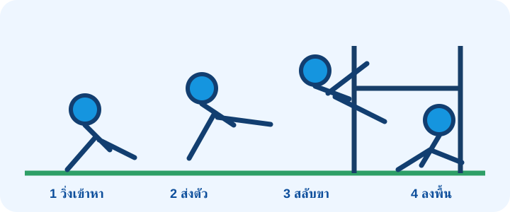
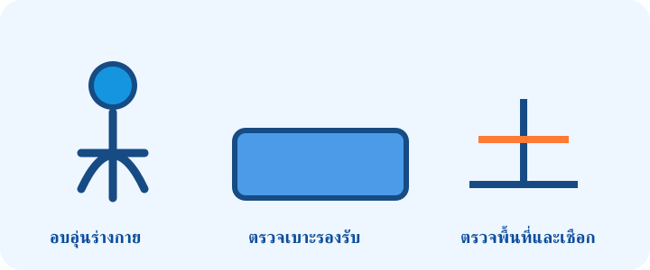
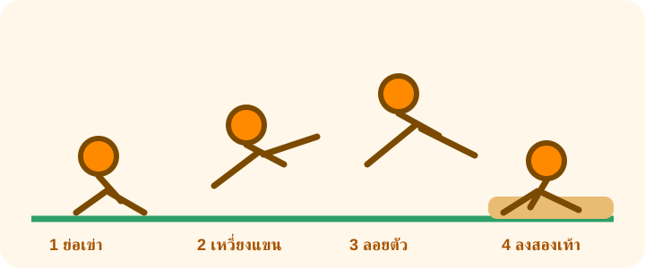
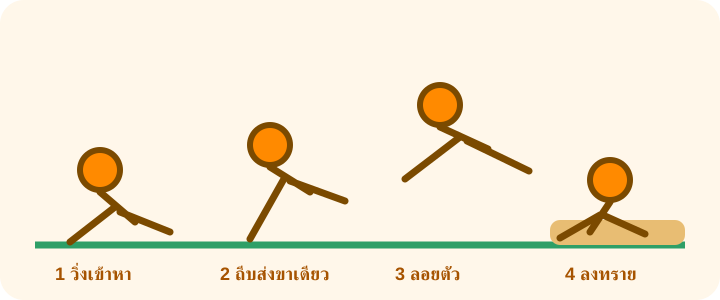
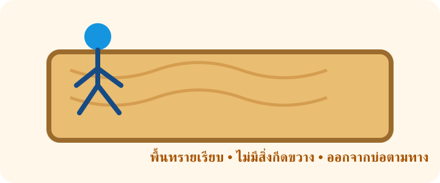

กีฬาประเภทลาน • พ22103
การกระโดดสูงแบบผูกเชือก
High Jump • 4 ขั้นตอนพื้นฐาน

ชั้นมัธยมศึกษาปีที่ 2
บทเรียนออนไลน์ ศึกษาความรู้ ดูสื่อ ทำกิจกรรม และเชื่อมสู่การฝึกปฏิบัติจริง
ทำแบบทดสอบก่อนเรียนเริ่มเรียนจากใบความรู้ทำแบบทดสอบ 4 เรื่องApproach → Take-off → Flight → Landing
เข้าหาจุดกระโดดด้วยจังหวะที่ควบคุมได้
ออกแรงส่งตัวขึ้นจากพื้นในจังหวะเหมาะสม
ควบคุมร่างกายขณะลอยตัวหรือข้ามเชือก
ลงสู่พื้นที่กำหนดอย่างมั่นคงและปลอดภัย
ศึกษาภาพรวมของทักษะก่อนทำ Mind Map ใบงาน และแบบทดสอบ


ขยายความจากภาพรวมสู่เทคนิคและจุดสำคัญในการปฏิบัติ
ใช้พื้นที่ลานสนามกีฬา เน้นทักษะพื้นฐานและความปลอดภัย

วิ่งเข้าหาด้วยจังหวะสม่ำเสมอ ใช้ขาข้างหนึ่งส่งตัวขึ้น นำขาอีกข้างข้ามเชือก และควบคุมการลง

ส่งตัวขึ้นด้วยขาข้างเดียว เหวี่ยงขานำข้ามเชือก แล้วสลับขาตามอย่างต่อเนื่อง

อบอุ่นร่างกาย ตรวจพื้นที่และอุปกรณ์ รอให้พื้นที่ลงว่าง และทำตามสัญญาณครูทุกครั้ง
ฝึกการสร้างแรงส่งไปด้านหน้าและลงสู่พื้นทรายอย่างปลอดภัย

เทคนิคที่ 1ย่อเข่า เหวี่ยงแขน ถีบพื้นด้วยเท้าทั้งสองพร้อมกัน ลอยตัวไปด้านหน้า และลงด้วยเท้าทั้งสองพร้อมย่อเข่ารับแรง

เทคนิคที่ 2เข้าหาจุดกระโดดอย่างควบคุม ใช้ขาข้างเดียวเป็นขาส่ง รักษาสมดุลขณะลอยตัว และลงสู่ทรายอย่างปลอดภัย

ใช้บ่อทรายที่ปรับพื้นเรียบ ตรวจสิ่งแปลกปลอม รอให้พื้นที่ว่าง และออกจากบ่อทรายตามทางที่กำหนด
เชื่อมการเรียนรู้บนเว็บไซต์กับการสาธิตและการฝึกปฏิบัติในชั้นเรียน
นักเรียนศึกษาสื่อดิจิทัล สังเกตการสาธิต วิเคราะห์ลำดับการเคลื่อนไหว และนำไปฝึกปฏิบัติจริงอย่างถูกต้องและปลอดภัย
นักเรียนทำและตรวจคะแนนได้ทันที และสามารถกลับไปทบทวนบทเรียนแล้วทำซ้ำได้
กระโดดสูง • กระโดดไกล • ขว้างจักร • ทุ่มน้ำหนัก เรื่องละ 10 ข้อ พร้อม Feedback และทำใหม่ได้
เปิดแบบทดสอบ 4 เรื่อง